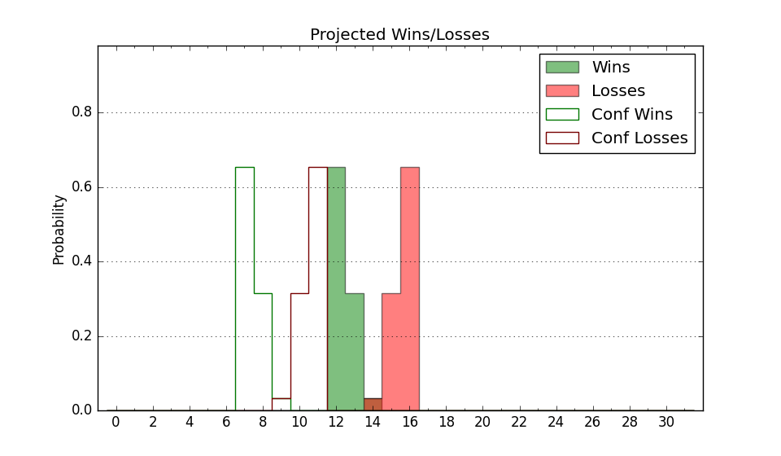

| Home | Game Probabilities | Conferences | Preseason Predictions | Odds Charts | NCAA Tournament |
| City: | Macon, Georgia | |
| Conference: | Southern (7th)
| |
| Record: | 7-9 (Conf) 12-14 (Overall) | |
| Ratings: | Comp.: -5.6 (227th) Net: -5.6 (227th) Off: 101.4 (238th) Def: 107.0 (205th) SoR: 0.0 (143rd) |
| Remaining | ||||||
|---|---|---|---|---|---|---|
| Date | Opponent | Win Prob | Pred. | |||
| 2/28 | @ Chattanooga (139) | 18.8% | L 66-76 | |||
| 3/2 | @ Furman (140) | 18.8% | L 68-78 | |||
| Previous | Game Score | |||||
| Date | Opponent | Win Prob | Result | Off | Def | Net |
| 11/9 | @Chicago St. (301) | 51.5% | W 66-61 | 2.6 | 9.8 | 12.5 |
| 11/14 | @Morehead St. (122) | 15.1% | L 66-74 | 0.1 | 8.2 | 8.3 |
| 11/17 | @Alabama (5) | 1.6% | L 67-98 | -1.9 | 2.7 | 0.8 |
| 11/24 | (N) Tennessee St. (280) | 61.7% | W 60-59 | -9.2 | 11.9 | 2.7 |
| 11/25 | (N) Western Michigan (286) | 62.9% | L 66-72 | -1.7 | -11.8 | -13.5 |
| 12/1 | @Georgia (97) | 11.9% | L 69-80 | 0.1 | -2.6 | -2.5 |
| 12/6 | South Alabama (248) | 67.5% | L 62-83 | -20.4 | -14.5 | -34.9 |
| 12/9 | Georgia St. (211) | 61.7% | W 64-60 | -1.9 | -1.5 | -3.4 |
| 12/16 | Florida Gulf Coast (252) | 68.0% | W 70-65 | 8.2 | -9.8 | -1.6 |
| 12/19 | Queens (276) | 73.0% | W 84-65 | 5.4 | 13.3 | 18.8 |
| 1/3 | @East Tennessee St. (225) | 34.6% | L 69-80 | 0.8 | -17.1 | -16.3 |
| 1/6 | @VMI (351) | 74.4% | W 86-64 | 2.7 | 13.4 | 16.2 |
| 1/10 | @Wofford (184) | 28.0% | L 73-74 | 9.3 | -1.0 | 8.3 |
| 1/13 | Western Carolina (121) | 37.6% | L 52-64 | -20.4 | 6.8 | -13.6 |
| 1/17 | Chattanooga (139) | 44.0% | L 60-74 | -17.0 | -8.7 | -25.7 |
| 1/20 | @Samford (82) | 9.5% | L 80-87 | 10.1 | 1.0 | 11.1 |
| 1/24 | @The Citadel (218) | 33.3% | L 66-68 | -2.5 | 7.9 | 5.4 |
| 1/27 | @UNC Greensboro (131) | 17.8% | W 70-64 | 5.3 | 16.1 | 21.4 |
| 1/31 | East Tennessee St. (225) | 64.3% | L 49-54 | -21.5 | 9.3 | -12.2 |
| 2/3 | VMI (351) | 90.8% | W 90-69 | 11.9 | -8.0 | 3.9 |
| 2/7 | Furman (140) | 44.0% | W 78-69 | 2.9 | 10.0 | 12.8 |
| 2/10 | @Western Carolina (121) | 15.1% | L 46-79 | -27.6 | -0.8 | -28.4 |
| 2/14 | Wofford (184) | 56.9% | L 60-73 | -8.5 | -15.6 | -24.1 |
| 2/17 | Samford (82) | 26.4% | W 88-84 | 17.6 | -1.1 | 16.5 |
| 2/21 | The Citadel (218) | 63.0% | W 87-78 | 29.6 | -18.8 | 10.8 |
| 2/24 | UNC Greensboro (131) | 42.5% | W 86-72 | 21.6 | -3.5 | 18.1 |
| Stats & Trends | |||||
|---|---|---|---|---|---|
| Current | Day | Week | Month | Season | |
| Composite | -5.6 | +0.0 | +1.2 | +1.5 | +0.9 |
| Comp Rank | 227 | +1 | +26 | +22 | +1 |
| Net Efficiency | -5.6 | +0.0 | +1.2 | +1.6 | -- |
| Net Rank | 227 | +3 | +25 | +22 | -- |
| Off Efficiency | 101.4 | +0.0 | +2.2 | +2.3 | -- |
| Off Rank | 238 | -- | +36 | +30 | -- |
| Def Efficiency | 107.0 | +0.0 | -0.9 | -0.7 | -- |
| Def Rank | 205 | -- | -10 | +11 | -- |
| SoS Rank | 221 | +2 | +2 | +32 | -- |
| Exp. Wins | 12.4 | +0.0 | +1.0 | +2.0 | -1.1 |
| Exp. Conf Wins | 7.4 | +0.0 | +1.0 | +2.0 | -1.5 |
| Conf Champ Prob | 0.0 | -- | -- | -- | -6.3 |

| Advanced Stats | ||
|---|---|---|
| Stat | Value | Rank |
| Off Eff FG % | 0.495 | 211 |
| Off Ast Ratio | 0.148 | 127 |
| Off ORB% | 0.294 | 122 |
| Off TO Rate | 0.156 | 245 |
| Off FT Ratio | 0.268 | 329 |
| Def Eff FG % | 0.507 | 180 |
| Def Ast Ratio | 0.135 | 118 |
| Def ORB% | 0.286 | 208 |
| Def TO Rate | 0.151 | 144 |
| Def FT Ratio | 0.440 | 341 |